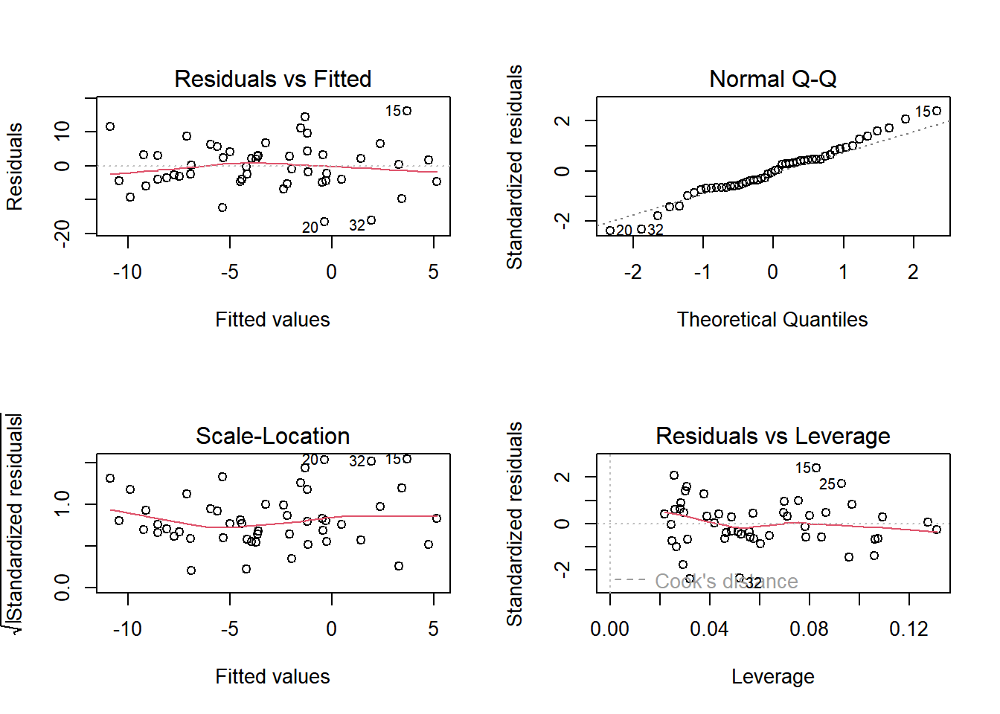
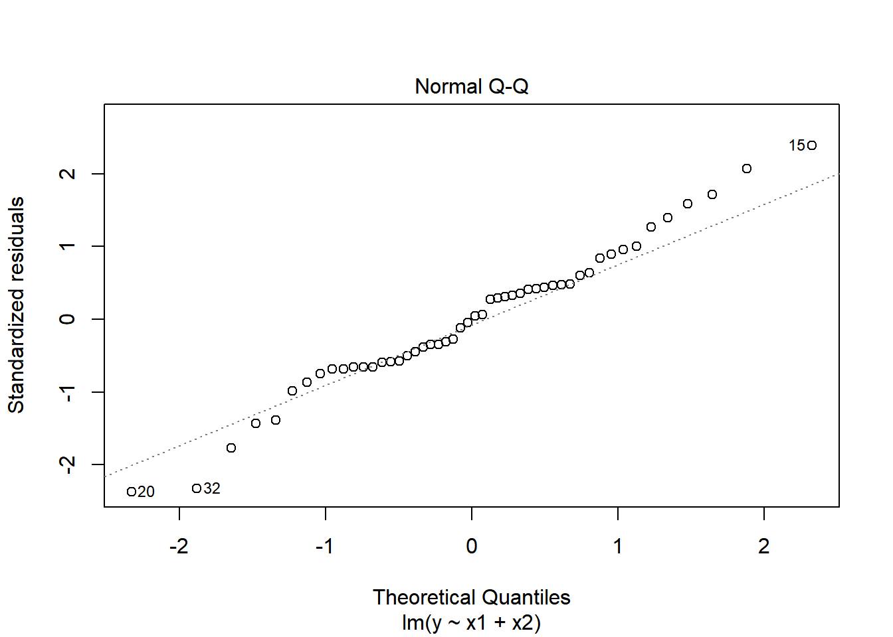
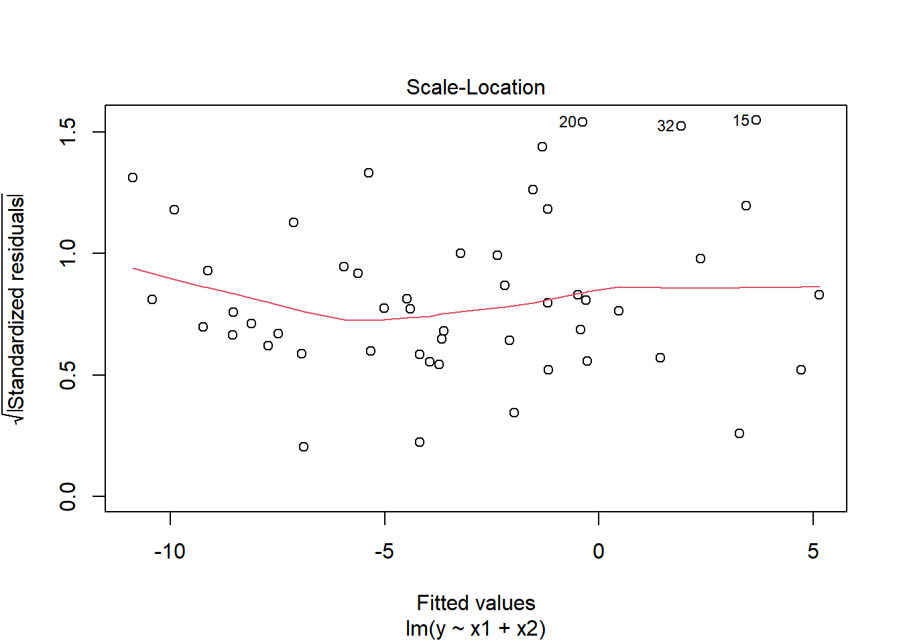
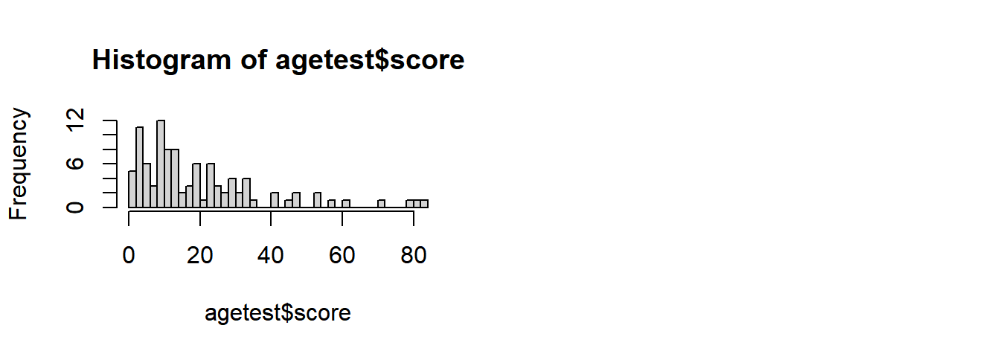
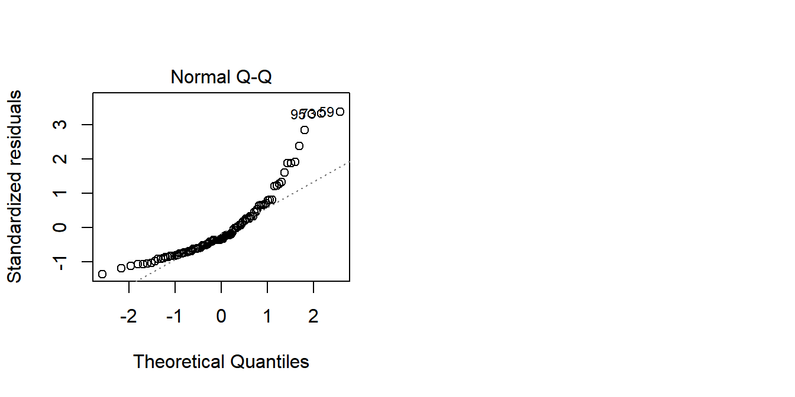
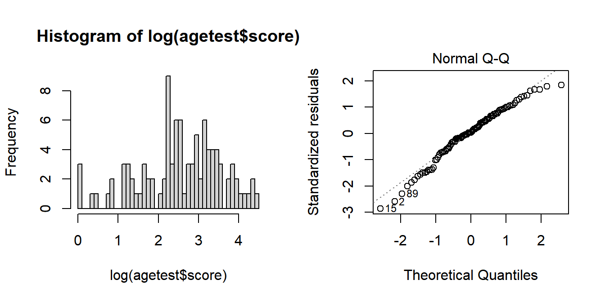

mydata <- read_csv("https://uoepsy.github.io/data/usmr_mlr.csv")
mymodel <- lm(y ~ x1 + x2, data = mydata)
plot(mymodel)8B: Assumptions, Diagnostics, and Troubleshooting
When we introduced simple linear regression, we talked about the assumptions that these models rely on (see 7A#assumptions).
We talked about the very high-level view:
\[ \color{red}{reality} \color{black}{= }\color{blue}{model}\color{black}{ + randomness} \]
The idea here is that our residuals (the deviations from observed values to model predicted values) should look more or less like randomness. If they don’t, then it indicates that something might be wrong.
To examine our assumptions, we can either rely on plotting, or on conducting statistical tests, or both.
Plotting Assumptions
We already saw how to interpret the plots in simple regression models (7A#assumptions), and this doesn’t change when we move to multiple regression models.

- Top Left: For the Residuals vs Fitted plot, we want the red line to be horizontal at close to zero across the plot. We don’t want the residuals (the points) to be fanning in/out.
- Top Right: For the Normal Q-Q plot, we want the residuals (the points) to follow closely to the diagonal line, indicating that they are relatively normally distributed.1
- Bottom Left: For the Scale-Location plot, we want the red line to be horizontal across the plot. These plots allow us to examine the extent to which the variance of the residuals changes accross the fitted values. If it is angled, we are likely to see fanning in/out of the points in the residuals vs fitted plot.
- Bottom Right: The Residuals vs Leverage plot indicates points that might be of individual interest as they may be unduly influencing the model. There are funnel-shaped lines on this plot (sometimes out of scope of the plotting window). Ideally, we want our residuals inside the funnel - the further the residual is to the right (the more leverage it has), the closer to the 0 we want it to be.
(Note, if we have only categorical predictors in our model, many of these will show vertical lines of points. This doesn’t indicate that anything is wrong, and the same principles described above continue to apply)
Tip:
running plot(model) will cycle through these plots (asking us to press enter each time to move to the next plot).
If needed, we can extract specific plots using, for instance: plot(model, which = 3) for the third plot.
Testing Assumptions
We can perform tests to examine how (un)likely we would be to see some residuals like those we have got, if they really did come from randomness.
testing normality
The Shapiro-Wilk test (we saw this very briefly in 3B#checking/testing-assumptions) is a test against the alternative hypothesis that the residuals were not sampled from a normally distributed population. \(p >.05\) indicates that we do not have evidence that the assumption has been violated. We can perform this test quickly in R using shapiro.test(residuals(modelname)).
shapiro.test(residuals(mymodel))
Shapiro-Wilk normality test
data: residuals(mymodel)
W = 0.98161, p-value = 0.6215plot(mymodel, which = 2)
Model residuals showed slight deviation from normality (see QQplot), but this was not deemed problematic as the Shapiro-Wilk test failed to reject the null hypothesis that the residuals were drawn from a normally distributed population (\(W = 0.98\), \(p = 0.62\))
testing constant variance
The ncvTest() function (from the car package) performs a test against the alternative hypothesis that the error variance changes with the level of the fitted values (also known as the “Breusch-Pagan test”). \(p >.05\) indicates that we do not have evidence that the assumption has been violated.
plot(mymodel, which = 3)
library(car)
ncvTest(mymodel)Non-constant Variance Score Test
Variance formula: ~ fitted.values
Chisquare = 2.50283, Df = 1, p = 0.11364Visual inspection of suggested little sign of non-constant variance, with the Breusch-Pagan test failing to reject the null that error variance does not change across the fitted values (\(\chi^2(1)=2.5\), \(p = 0.11\))
Multicollinearity
For the linear model with multiple explanatory variables, we need to also think about multicollinearity - this is when two (or more) of the predictors in our regression model are moderately or highly correlated.
Recall our interpretation of multiple regression coefficients as
This interpretation falls down if predictors are highly correlated because if, e.g., predictors \(x_1\) and \(x_2\) are highly correlated, then changing the value of \(x_1\) necessarily entails a change the value of \(x_2\) meaning that it no longer makes sense to talk about holding \(x_2\) constant.2
We can assess multicollinearity using the variance inflation factor (VIF), which for a given predictor \(x_j\) is calculated as:
\[ VIF_j = \frac{1}{1-R_j^2} \\ \]
Where \(R_j^2\) is the coefficient of determination (the R-squared) resulting from a regression of \(x_j\) on to all the other predictors in the model (\(x_j = x_1 + ... x_k + \epsilon\)). The more highly correlated \(x_j\) is with other predictors, the bigger \(R_j^2\) becomes, and thus the bigger \(VIF_j\) becomes.
The square root of VIF indicates how much the SE of the coefficient has been inflated due to multicollinearity. For example, if the VIF of a predictor variable were 4.6 (\(\sqrt{4.6} = 2.1\)), then the standard error of the coefficient of that predictor is 2.1 times larger than if the predictor had zero correlation with the other predictor variables. Suggested cut-offs for VIF are varied. Some suggest 10, others 5.
It’s good practice to define what you will consider an acceptable value prior to calculating it.
In R, the vif() function from the car package will provide VIF values for each predictor in your model (these are called “GVIF” if there are categorical predictors).
vif(mymodel) x1 x2
1.004384 1.004384 VIF values <5 indicate that multicollinearity is not adversely affecting model estimates.
Individual Case Diagnostics
In linear regression, individual cases in our data can influence our model more than others. There are a variety of measures we can use to evaluate the amount of misfit and influence that single observations have on our model and our model estimates.
THERE ARE NO HARD RULES FOR WHAT COUNTS AS “INFLUENTIAL” AND HOW WE SHOULD DEAL WITH THESE CASES
There are many ways to make a cake. recipes can be useful, but you really need to think about what ingredients you actually have (what data you have).
You don’t have to exclude influential observations. Try to avoid blindly following cut-offs, and try to think carefully about outliers and influential points and whether you want to exclude them, and whether there might be some other model specification that captures this in some estimable way.
You might also ask “do these observations change the conclusions i might make?” (consider conducting a ‘sensitivity analysis’ by fitting the models with and without these certain cases).
There are various measures of outlyngness and influence. Here are a few. You do not need to remember all of these!
Regression outliers:
A large residual \(\hat \epsilon_i\) - i.e., a big discrepancy between their predicted y-value and their observed y-value.
- Standardised residuals: For residual \(\hat \epsilon_i\), divide by the estimate of the standard deviation of the residuals. In R, the
rstandard()function will give you these - Studentised residuals: For residual \(\hat \epsilon_i\), divide by the estimate of the standard deviation of the residuals excluding case \(i\). In R, the
rstudent()function will give you these. Values \(>|2|\) (greater in magnitude than two) are considered potential outliers.
High leverage cases:
These are cases which have considerable potential to influence the regression model (e.g., cases with an unusual combination of predictor values).
- Hat values: are used to assess leverage. In R, The
hatvalues()function will retrieve these.
Hat values of more than \(2 \bar{h}\) (2 times the average hat value) are often worth looking at. \(\bar{h}\) is calculated as \(\frac{k + 1}{n}\), where \(k\) is the number of predictors, and \(n\) is the sample size.
High influence cases:
When a case has high leverage and is an outlier, it will have a large influence on the regression model.
- Cook’s Distance: combines leverage (hatvalues) with outlying-ness to capture influence. There are many suggested Cook’s Distance cut-offs.
- In R, the
cooks.distance()function will provide these.
- The funnels on the “residuals vs leverage plot” (
plot(model, which = 5)) are a visual representation of where different cook’s distance values will fall.
- We can also see the Cook’s distance values themselves using
plot(model, which = 4).
- In R, the
- DFFit: the change in the predicted value at the \(i^{th}\) observation with and without the \(i^{th}\) observation is included in the regression.
- DFbeta: the change in a specific coefficient with and without the \(i^{th}\) observation is included in the regression.
- DFbetas: the change in a specific coefficient divided by the standard error, with and without the \(i^{th}\) observation is included in the regression.
- COVRATIO: measures the effect of an observation on the covariance matrix of the parameter estimates. In simpler terms, it captures an observation’s influence on standard errors. Values which are \(>1+\frac{3(k+1)}{n}\) or \(<1-\frac{3(k+1)}{n}\) are sometimes considered as having strong influence.
You can get a whole bucket-load of these measures with the influence.measures() function.
influence.measures(mymodel)will give you out a dataframe of the various measures.
summary(influence.measures(mymodel))will provide a nice summary of what R deems to be the influential points.
summary(influence.measures(mymodel))Potentially influential observations of
lm(formula = y ~ x1 + x2, data = mydata) :
dfb.1_ dfb.x1 dfb.x2 dffit cov.r cook.d hat
2 0.02 0.00 -0.02 0.03 1.22_* 0.00 0.13
15 -0.05 0.57 -0.38 0.76_* 0.79_* 0.17 0.08
20 0.00 -0.25 0.13 -0.46 0.75_* 0.06 0.03
27 -0.02 0.08 -0.04 0.09 1.19_* 0.00 0.11
32 -0.11 -0.31 0.35 -0.57 0.78_* 0.10 0.05
36 -0.10 0.06 0.07 -0.10 1.22_* 0.00 0.13If we wanted, we could re-fit the model with all of these observations removed. This little bit of code, to get the row numbers of influential points, is from the examples in the help documentation for ?influence.measures:
inflm <- influence.measures(mymodel)
inf_points <- which(apply(inflm$is.inf, 1, any))And then remove those rows when we re-fit the model:
mymodel_subset <- lm(y ~ x1 + x2, mydata[-inf_points, ])We can then compare summary(mymodel) and summary(mymodel_subset) to examine whether our conclusions about the relevant association changes when we exclude these people. If it doesn’t change our conclusions, then our eventual findings are robust to the influence of these people. If it does, then we have something we can discuss!
Troubleshooting
There are lots of things that can result in assumptions that look problematic. Assumptions may be violated if, for instance, there is non-linearity in the relationship being studied, or if relationship between \(y\) and \(x_1\) depends on the level of \(x_2\) (we’ll cover this scenario next week), or if there is some important variable that isn’t measured or included in the model.
The various causes behind having a model that violates assumptions means that there is no fix-all solution.
transformations
One option that may be useful is to consider transforming your outcome variable. Common variables such as neuropsychological tests and scales have a lot of people bunched up near the bottom or top of the scale (referred to as the “ceiling” and “floor”). Transformations can spread out the bunched-up scores.
For an example, consider a scale where most people score fairly low:
hist(agetest$score, breaks=40)
If we are interested in how scores are predicted by age, it may well be the case that the amount scores increase/decrease with age is different depending on how far up the scores we are thinking about. It may be that modelling the raw scores predicted by age results in some problematic assumption plots:
mod <- lm(score ~ age, data = agetest)
plot(mod, which = 2)
We can transform the scores using something such as log()3. This basically stretches out the differences at the lower end of the scale. So scoring 2 vs scoring 3 is considered to be a bigger difference than scoring 20 vs 21:
tibble(
raw = c(2,3,20,21),
log = log(raw)
)# A tibble: 4 × 2
raw log
<dbl> <dbl>
1 2 0.693
2 3 1.10
3 20 3.00
4 21 3.04 The resulting distribution of transformed scores is closer to normally distributed, and the residuals of modelling lm(log(score) ~ age) looking less problematic:
hist(log(agetest$score), breaks=40)
modlog <- lm(log(score) ~ age, data = agetest)
plot(modlog, which = 2)
The big downside of transforming an outcome variable is that you are no longer modelling the outcome variable on its original scale. Coefficients now represent “a 1 unit change in x is associated with a \(b\) change in log y”. Which makes it a lot harder to interpret.
It’s best to only transform your outcome variable if you have theoretical justification to do so.
Bootstrap
Bootstrapping provides a different technique for drawing inferences. We actually learned about the logic of bootstrapping back in 2B#standard-error-in-practice. It all comes down to the construction of the standard error. In the output of summary(model), we are given, alongside each coefficient \(b\), a standard error, a \(t\)-value and a \(p\)-value. These all rely on using a formula to calculate the standard error, and it is this which requires making assumptions about the distribution of residuals.
Bootstrapping is an approach that constructs a distribution of possible values for coefficient estimates \(b\), from which we can calculate a confidence interval. It does so by repeatedly resampling with replacement from the original sample (do check back to 2B#standard-error-in-practice for an example).
In practice, this can all be done very easily in R by using the Boot() function from the car package. We can ask it to resample 1000 times (getting a distribution of 1000 values for the coefficients):
mydata <- read_csv("https://uoepsy.github.io/data/usmr_mlr.csv")
mymodel <- lm(y ~ x1 + x2, data = mydata)
library(car)
bootmymodel <- Boot(mymodel, R = 1000)The bootmymodel object actually contains lots of stuff (it contains all 1000 sets of coefficient estimates!). We can get some confidence intervals easily:
Note: the actual estimates are those from our original model, it is just the bounds of the interval that bootstrapping is providing us with)
Confint(bootmymodel)Bootstrap bca confidence intervals
Estimate 2.5 % 97.5 %
(Intercept) -2.3913797 -6.81733162 3.4833958
x1 0.1757046 0.06226639 0.3014810
x2 -0.6475619 -1.02709666 -0.2969874Bootstrapping doesn’t fix everything!
The bootstrap may provide us with better inferential information, but our model may still be misspecified.
Furthermore, it’s very important to remember that we can’t get something from nothing. Bootstrapping is all reliant on our original sample - if that sample is not representative of the population that we’re interested in, bootstrapping doesn’t help us at all.
Footnotes
QQplots plot the values against the associated percentiles of the normal distribution. So if we had ten values, it would order them lowest to highest, then plot them on the y against the 10th, 20th, 30th.. and so on percentiles of the standard normal distribution (mean 0, SD 1)↩︎
For an example, consider two variables: foot length (in cm) and UK shoe size. These will be very strongly correlated. If we used them both to predict some outcome like height, then trying to imagine “holding shoe size constant, having feet 1cm longer is associated with \(b\) increase in height” doesn’t make sense. Because having feet 1cm longer will very likely also mean wearing a bigger shoe size. In cases like this, the regression surface becomes unstable.↩︎
another useful transformation is
BoxCox()from the forecast package↩︎